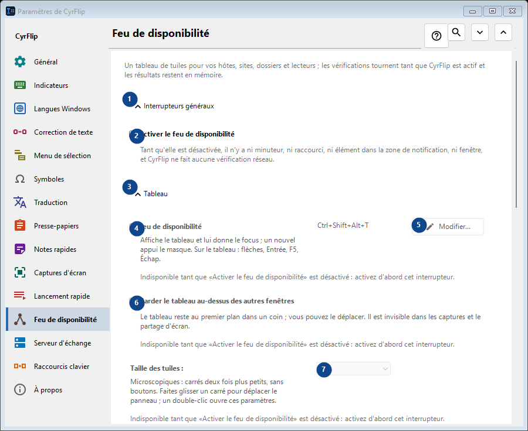
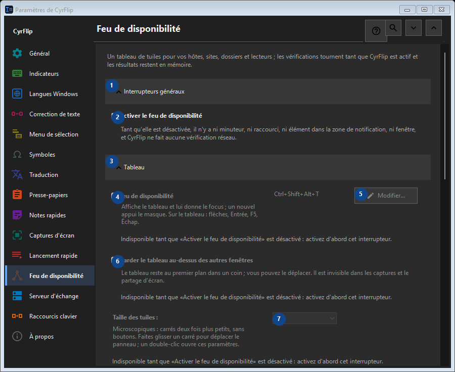

Feu de disponibilité
À quoi cela sert
Un tableau de tuiles pour vos hôtes, sites, dossiers et lecteurs ; les vérifications tournent tant que CyrFlip est actif et les résultats restent en mémoire.


Ordre des actions
Les réglages s’appliquent immédiatement. Aucun ordre n’est imposé ; utilisez les groupes ci-dessous.
Éléments
1. Interrupteurs généraux
Utilisez cette commande pour l’action indiquée. Lisez toute confirmation avant de l’accepter.
Vos raccourcis2. Activer le feu de disponibilité
Tant qu'elle est désactivée, il n'y a ni minuteur, ni raccourci, ni élément dans la zone de notification, ni fenêtre, et CyrFlip ne fait aucune vérification réseau.
Vos raccourcis3. Tableau
Utilisez cette commande pour l’action indiquée. Lisez toute confirmation avant de l’accepter.
Vos raccourcis4. Feu de disponibilité
Indisponible tant que «Activer le feu de disponibilité» est désactivé : activez d'abord cet interrupteur. Cet élément est indisponible. Activez d’abord sa fonction ou sélectionnez une entrée.
Vos raccourcis5. Modifier - Feu de disponibilité
Indisponible tant que «Activer le feu de disponibilité» est désactivé : activez d'abord cet interrupteur. Cet élément est indisponible. Activez d’abord sa fonction ou sélectionnez une entrée.
Vos raccourcis6. Garder le tableau au-dessus des autres fenêtres
Indisponible tant que «Activer le feu de disponibilité» est désactivé : activez d'abord cet interrupteur. Cet élément est indisponible. Activez d’abord sa fonction ou sélectionnez une entrée.
Vos raccourcis7. Taille des tuiles
Indisponible tant que «Activer le feu de disponibilité» est désactivé : activez d'abord cet interrupteur. Cet élément est indisponible. Activez d’abord sa fonction ou sélectionnez une entrée.
Vos raccourcis8. Colonnes
Indisponible tant que «Activer le feu de disponibilité» est désactivé : activez d'abord cet interrupteur. Cet élément est indisponible. Activez d’abord sa fonction ou sélectionnez une entrée.
Vos raccourcis9. Indisponible tant que «Activer le feu de disponibilité» est désactivé : activez d'abord cet interrupteur.
Choisissez ou saisissez la valeur indiquée par le libellé voisin. Vérifiez-la avant de continuer. Cet élément est indisponible. Activez d’abord sa fonction ou sélectionnez une entrée.
Vos raccourcis10. Transparence de la fenêtre du tableau
Indisponible tant que «Activer le feu de disponibilité» est désactivé : activez d'abord cet interrupteur. Cet élément est indisponible. Activez d’abord sa fonction ou sélectionnez une entrée.
Vos raccourcis11. Afficher le tableau
Indisponible tant que «Activer le feu de disponibilité» est désactivé : activez d'abord cet interrupteur. Cet élément est indisponible. Activez d’abord sa fonction ou sélectionnez une entrée.
Vos raccourcis12. Cibles
Utilisez cette commande pour l’action indiquée. Lisez toute confirmation avant de l’accepter.
Vos raccourcis13. Adresse
Indisponible tant que «Activer le feu de disponibilité» est désactivé : activez d'abord cet interrupteur. Cet élément est indisponible. Activez d’abord sa fonction ou sélectionnez une entrée.
Vos raccourcis14. Ajouter
Indisponible tant que «Activer le feu de disponibilité» est désactivé : activez d'abord cet interrupteur. Cet élément est indisponible. Activez d’abord sa fonction ou sélectionnez une entrée.
Vos raccourcis15. Détails...
Indisponible tant que «Activer le feu de disponibilité» est désactivé : activez d'abord cet interrupteur. Cet élément est indisponible. Activez d’abord sa fonction ou sélectionnez une entrée.
Vos raccourcis16. Tout vérifier maintenant
Indisponible tant que «Activer le feu de disponibilité» est désactivé : activez d'abord cet interrupteur. Cet élément est indisponible. Activez d’abord sa fonction ou sélectionnez une entrée.
Vos raccourcis17. Journal des changements
Utilisez cette commande pour l’action indiquée. Lisez toute confirmation avant de l’accepter.
Vos raccourcis18. Ouvrir le fichier du journal
Indisponible tant que «Activer le feu de disponibilité» est désactivé : activez d'abord cet interrupteur. Cet élément est indisponible. Activez d’abord sa fonction ou sélectionnez une entrée.
Vos raccourcis19. Afficher dans le dossier
Indisponible tant que «Activer le feu de disponibilité» est désactivé : activez d'abord cet interrupteur. Cet élément est indisponible. Activez d’abord sa fonction ou sélectionnez une entrée.
Vos raccourcis20. Effacer le journal...
Indisponible tant que «Activer le feu de disponibilité» est désactivé : activez d'abord cet interrupteur. Cet élément est indisponible. Activez d’abord sa fonction ou sélectionnez une entrée.
Vos raccourcis